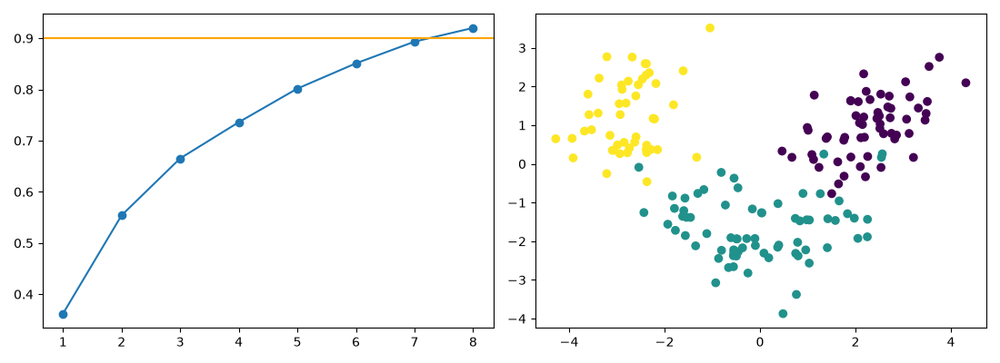

ABHINAV TANWAR · PYTHON ANALYSIS
Wine PCA Python Extension
A Python companion to the existing wine dimension-reduction R repository.
Scope and methods
Adds a Python companion to the existing Wine Dimension Reduction R project rather than creating a duplicate public repository. Class is excluded from the PCA input. All-row standardization is used for this explicitly descriptive compression analysis. Eight components should retain at least 90% variance; reconstruction is assessed in standardized units. This is not held-out classification performance.
Measured results
| Calculated measure | Value |
|---|---|
| rows | 178 |
| features | 13 |
| components 90 | 8 |
| retained variance | 0.9202 |
| standardized reconstruction mse | 0.07982 |
Pca

Full result structure
{
"rows": 178,
"features": 13,
"components_90": 8,
"retained_variance": 0.9201754434577265,
"standardized_reconstruction_mse": 0.0798245565422737,
"scope": "in-sample descriptive compression, not classification accuracy"
}